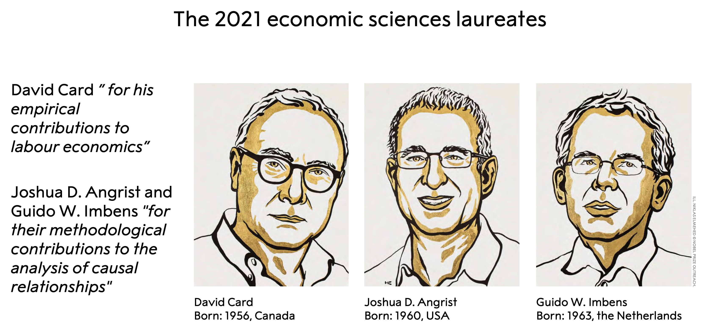
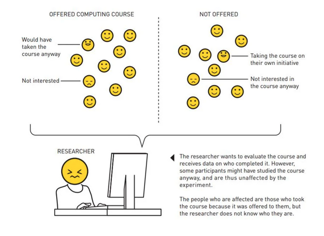
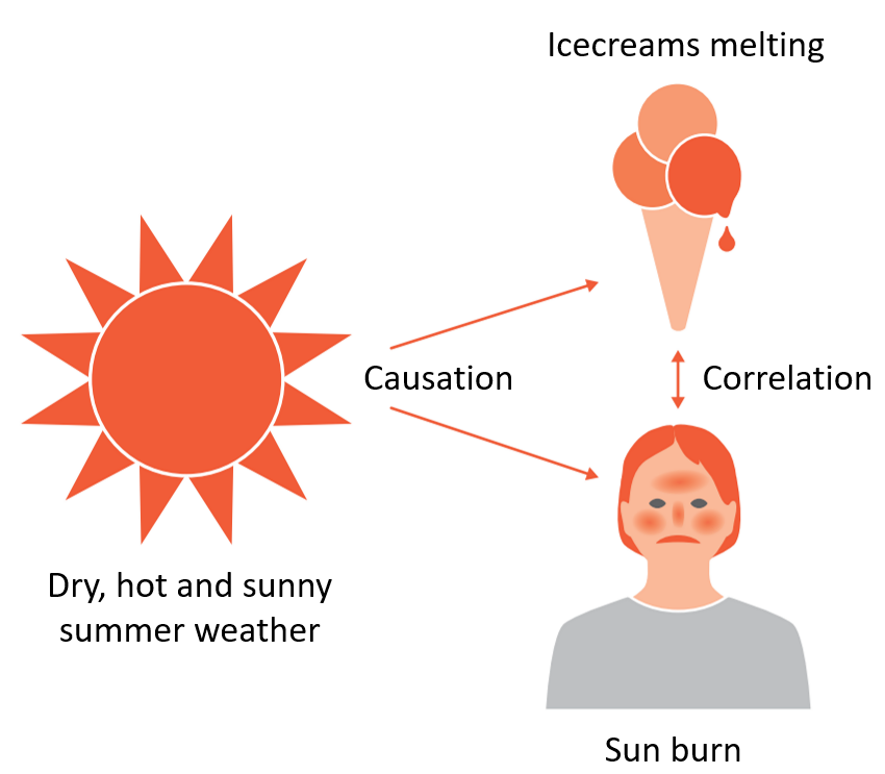
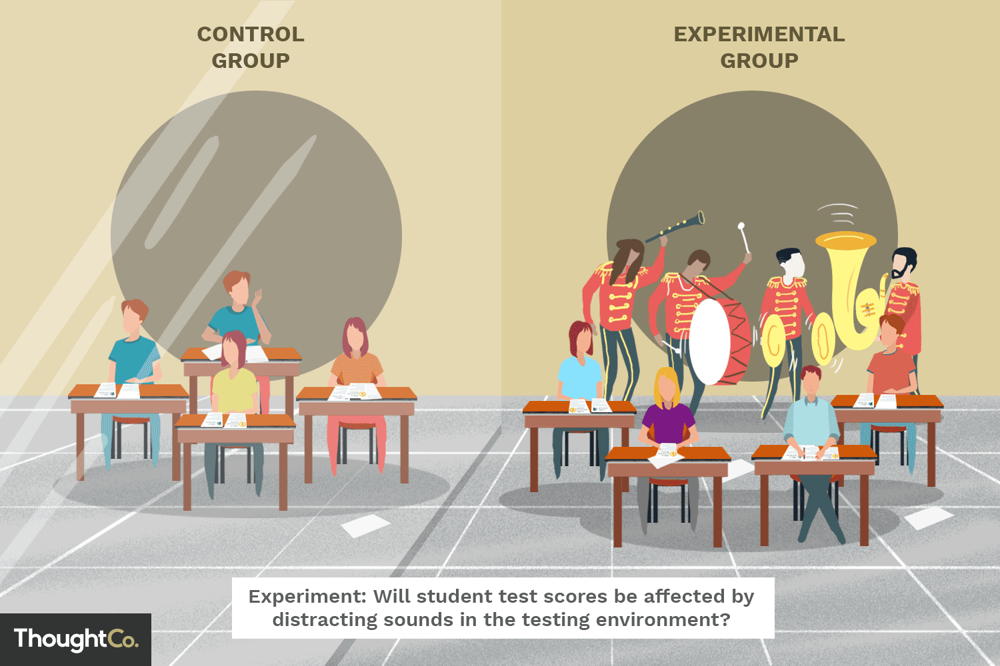
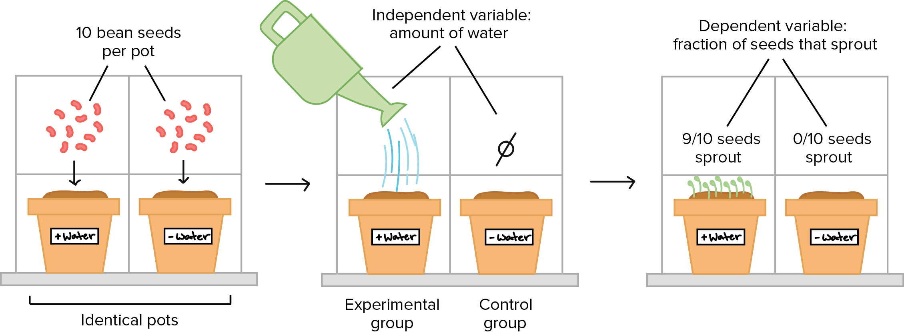
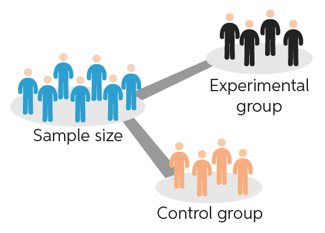
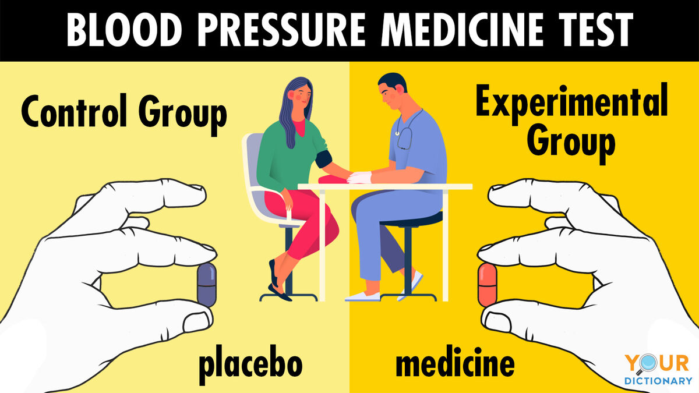
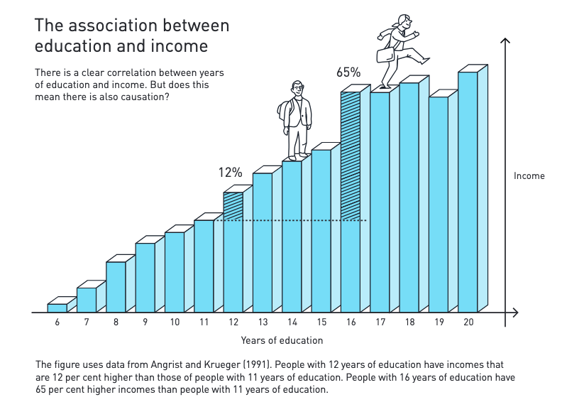
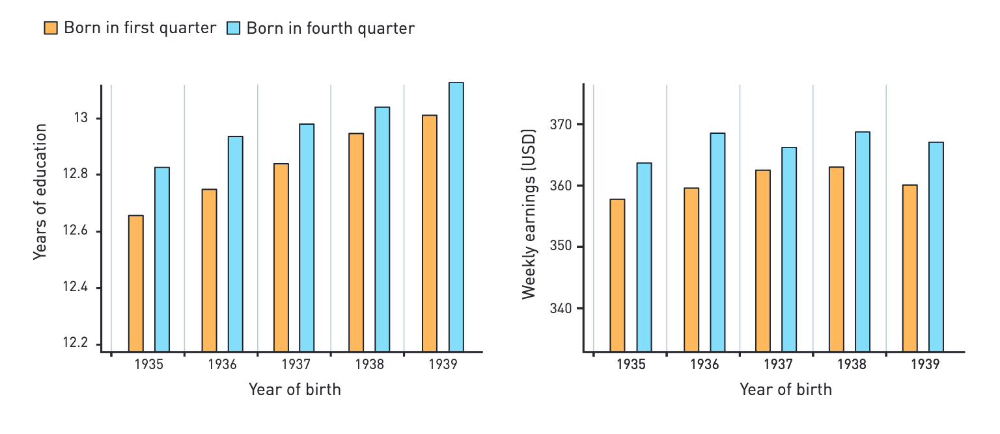
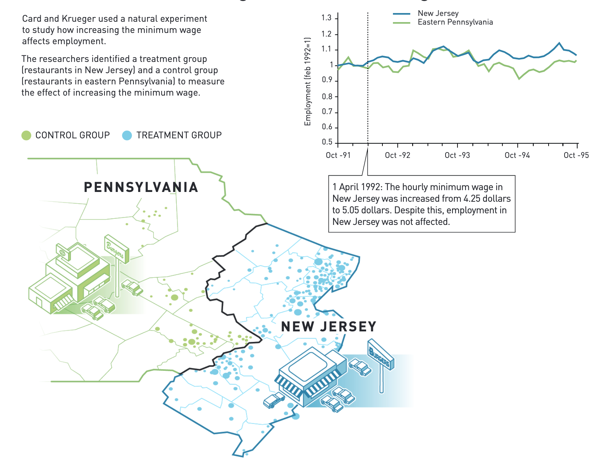

14 Natural experiments help answer important questions for society
The 2021 Nobel Prize in Economic Sciences was awarded to Prof David Card (UC Berkeley), Prof Joshua D. Angrist (MIT), and Prof Guido W. Imbens (Stanford) for pioneering “natural experiments” to help answer important real-world questions. They have provided us with new insights about the natural experiments. Their approach has spread to other fields and revolutionized empirical research.
Many of the big questions in the social sciences deal with cause and effect. How does immigration affect pay and employment levels? How does a longer education affect someone’s future income? These questions are difficult to answer because we have nothing to use as a comparison.
However, this year’s Laureates have shown that it is possible to answer these and similar questions using natural experiments.

14.0.1 Experiment in physical science vs. experiment in economics
The key difference between an experiment in economics and an experiment in physical science lies in the subject matter and the level of control over variables, with physics experiments generally having more control over variables due to studying inanimate objects, while economics experiments deal with human behavior, making it harder to isolate and manipulate factors, often requiring more reliance on observation and controlled settings to test economic theories.

14.0.2 Causality vs. correlation
Correlation: Correlation is a statistical measure (expressed as a number) that describes the size and direction of a relationship between two or more variables. A correlation between variables, however, does not automatically mean that the change in one variable is the cause of the change in the values of the other variable.
Causality: Causation indicates that one event is the result of the occurrence of the other event; i.e. there is a causal relationship between the two events. This is also referred to as cause and effect.
The difference between causality and correlation. When the sun makes ice cream melt and people get sunburned, we have causality. For the summer period, a researcher can measure a statistical correlation between the number of melted ice creams and the number of sunburned people. But despite such mathematical correlation, it is not the ice cream that makes people sunburnt, or vice versa. Instead, it is a case of correlation without causality.

14.0.3 Make a good decision:
If we are to make good decisions, we must understand the consequences of our choices. This applies to individuals as well as public policy makers: young people who are making educational choices want to know how these affect their future income; politicians considering a range of reforms want to know how these affect employment and income distribution, for example. However, answering broad questions about cause and effect is not easy, because we will never know what would have happened if we had made a different choice.
Many of the big questions in the social sciences deal with cause and effect. How does immigration affect pay and employment levels? How does a longer education affect someone’s future income? These questions are difficult to answer because we have nothing to use as a comparison. We do not know what would have happened if there had been less immigration or if that person had not continued studying.
However, this year’s Laureates have shown that it is possible to answer these and similar questions using natural experiments. The key is to use situations in which chance events or policy changes result in groups of people being treated differently, in a way that resembles clinical trials in medicine.
14.0.4 Treatment/Experimental and Control/Placebo Groups
There are two groups in the experiment, and they are identical except that one receives a treatment while the other does not. The group that receives the treatment in an experiment is called the treatment/experimental group, while the group that does not receive the treatment is called the control group. The control group provides a baseline that lets us see if the treatment has an effect.



14.0.4.1 Example: Vitamin B Energy Study
Researchers want to know if adults who consume a drink that is high in vitamin B-12 have increased energy. They obtain a representative sample of adults. All participants are given a drink that they are told to consume every morning. They are not told what is in the drink. Half are given a drink that is high in vitamin B-12 while the other half are given a drink that tastes the same but contains no vitamin B-12.
The participants who received the drink with no vitamin B-12 are the placebo group. The purpose of the placebo group in this study is to make the two groups equivalent except for the presence of the vitamin B-12. By comparing these two groups, the researchers will be able to determine what impact the vitamin B-12 had on the response variable. We could also say that this served as a control group because this group did not receive any active ingredients.

14.0.5 First example of a natural experiment
Let us use a concrete example to illustrate how a natural experiment works. One question that is relevant to both society and to young people considering their future, is how much more you would earn if you chose to study longer. An initial attempt to answer this question could involve looking at data on how people’s earnings relate to their education. In every conceivable context, people with more years of education have higher incomes. For example, for men born in the US during the 1930s, earnings were, on average, seven per cent higher for those with one additional year of education.
So, can we conclude that an extra year of education adds an extra seven per cent on your income? The answer to this question is no – people who choose a long education differ in many ways from those who choose a short education. For example, some people may be talented at studying and at working. These people are likely to continue studying, but they would still probably have had a high income even if they hadn’t. It may also be the case that only people who expect education to pay off choose to study longer.

- So, how can we use a natural experiment to examine whether additional years of education affect future income? Joshua Angrist and his colleague Alan Krueger (now deceased) showed how this could be done in a landmark article. In the US, children can leave school when they turn 16 or 17, depending on the state where they go to school. Because all children who are born in a particular calendar year start school on the same date, children who are born early in the year can leave school sooner than children born later in the year. When Angrist and Krueger compared people born in the first and fourth quarters of the year, they saw that the first group had, on average, spent less time in education. People born in the first quarter also had lower incomes than those born in the fourth quarter. As adults they thus had both less education and lower incomes than those born late in the year.
- Quarter 1: January, February and March
- Quarter 2: April, May and June
- Quarter 3: July, August and September
- Quarter 4: October, November and December
- Because chance decides exactly when a person is born, Angrist and Krueger were able to use this natural experiment to establish a causal relationship showing that more education leads to higher earnings: the effect of an additional year of education on income was nine per cent. It was surprising that this effect was stronger than the association between education and income, which amounted to seven per cent. If ambitious and intelligent people have both high levels of education and high incomes (regardless of education) the result should have been the opposite; the correlation should have been stronger than the causal relationship. This observation raised new questions about how to interpret the results of natural experiments – questions that were later answered by Joshua Angrist and Guido Imbens.
14.0.5.1 People born late in the year have more years of education and higher incomes

- It would be easy to believe that situations which enable natural experiments are very unusual, especially those that can be used to answer important questions. Research conducted over the past 30 years has shown that this is not the case: natural experiments occur frequently. For example, they may arise due to policy changes in some regions of a country, admission cut-offs in higher education, or income thresholds in tax and benefit systems, which mean that some individuals are exposed to an intervention while other, similar, individuals are not. There is thus unintended randomness that divides people into control and treatment groups, providing researchers with opportunities for uncovering causal relationships.
14.0.6 Second example of a natural experiment
- In the early 1990s, the conventional wisdom among economists was that higher minimum wages lead to lower employment because they increase wage costs for businesses. However, the evidence supporting this conclusion was not fully convincing; there were indeed many studies that indicated a negative correlation between minimum wages and employment, but did this really mean that higher minimum wages led to higher unemployment?
14.0.6.1 The effect of increasing the minimum wage
- To investigate how increased minimum wages affect employment, Card and Krueger used a natural experiment. In the early 1990s, the minimum hourly wage in New Jersey was raised from 4.25 dollars to 5.05 dollars. Just studying what happened in New Jersey after this increase does not give a reliable answer to the question, as numerous other factors can influence how employment levels change over time. As with randomized experiments, a control group was needed, i.e., a group where wages didn’t change but all the other factors were the same.

Card and Krueger noted that there was no increase in neighbouring Pennsylvania. Of course, there were differences between the two states, but it is likely that the labor markets would evolve similarly close to the border. So, they studied the effects on employment in two neighboring areas – New Jersey and eastern Pennsylvania – which have a similar labor market, but where the minimum wage was increased on one side of the border but not the other. There was no apparent reason to believe that any factor (such as the economic situation) apart from the increase in the minimum wage would affect employment trends differently on either side of the border. Thus, if a change in the number of employees was observed in New Jersey, and this differed from any change on the other side of the border, there was good reason to interpret this as an effect of the increase in the minimum wage.
Card and Krueger focused on employment in fast-food restaurants, an industry where pay is low and minimum wages matter. Contrary to previous research, they found that an increase in the minimum wage had no effect on the number of employees. David Card arrived at the same conclusion in a couple of studies in the early 1990s. This pioneering research has led to a large number of follow- up studies. The overall conclusion is that the negative effects of increasing the minimum wage are small, and significantly smaller than was believed 30 years ago.
The work conducted by Card at the beginning of the 1990s also led to new research, which attempted to explain the absence of negative effects on employment. One possible explanation is that companies can transfer increased costs to consumers in the form of higher prices, without significant reductions in demand. Another explanation is that companies that dominate their local labor market can keep wages low; an increased minimum wage thus means that more people want to work, leading to increased employment. When companies have such power over the market, we cannot determine in advance how employment will be affected by changes to the minimum wage. The many studies inspired by Card and Krueger’s work have considerably improved our understanding of the labor market.
References:
- Nobel Prize Lecture by David Card, Joshua Angrist and Guido Imbens.